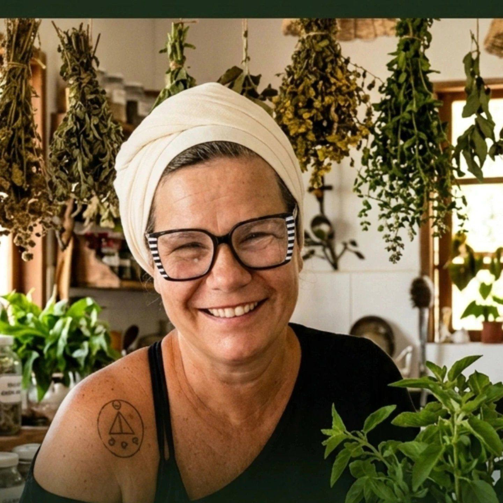

Musicista, compositora, escritora, sacerdotisa e oraculista.
Mais de duas décadas a serviço das tradições afro-brasileiras, da palavra, da erva e da cura.
Barão Geraldo, Campinas.
Tatiana Rocha é musicista, compositora, escritora, sacerdotisa de Umbanda e Quimbanda Congo e oraculista. Mais de vinte anos de prática nas tradições afro-brasileiras, com passagem pelo terreiro, pela composição, pela palavra escrita e pela ervologia.
Trabalha com consultas oraculares individuais, vivências coletivas, formação em ervas sagradas e produção de material de estudo. Sua prática parte do que é vivido, não do que é aprendido nos livros.
Fundadora da Botica de Yayá, cultiva ervas no quintal de Barão Geraldo e constrói uma casa de cura de barro. Caminha com Cabocla Jurema desde os dezessete anos.
Dez álbuns gravados, um DVD, composições no Spotify e no YouTube. Uma carreira musical construída em Campinas com presença no Museu de Arte e Som. A música é parte inseparável de quem Yayá é.
"O oráculo não é ferramenta de adivinhação. É ferramenta de governo."
Produtos artesanais naturais feitos com ervas cultivadas no quintal de Barão Geraldo. Sabões, óleos, banhos, tinturas e preparos rituais com intenção, conhecimento e cuidado.
A Botica nasce do mesmo lugar que tudo que Yayá faz: da relação direta com a terra, com as plantas e com a tradição vivida.
EncomendarPara consultas, vivências, encomendas da Botica ou parcerias, entre em contato pelo WhatsApp ou pelas redes sociais.